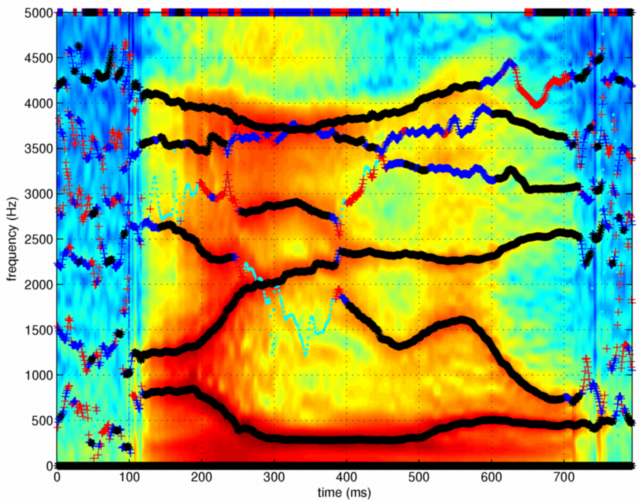
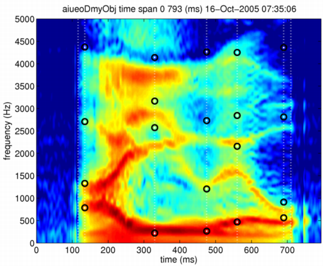
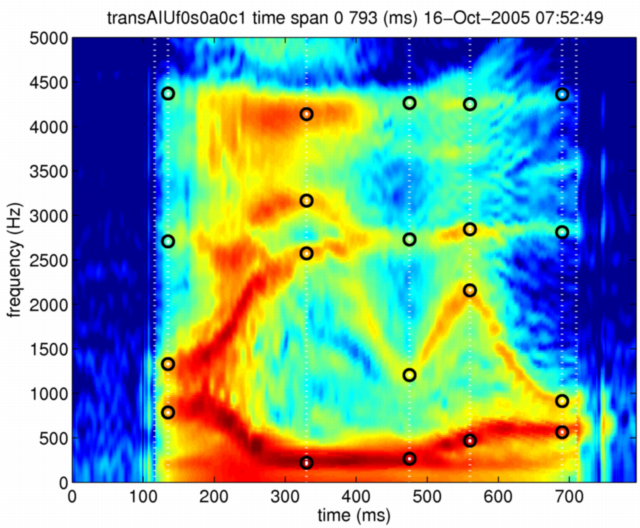

| | Formant frequency shift of each segment | Contents | Index |
This section shows how to manipulate formant frequencies of vowel segments. The same vowel sequence is used as the example. The first thing is to create the morphing object and register the speech signal.
[x,fs]=wavread('../STRAIGHTV40_003b/vaiueo2d.wav');
aiueoObj = createMobject
aiueoObj = updateFieldOfMobject(aiueoObj,'waveform',x);
aiueoObj = updateFieldOfMobject(aiueoObj,'samplingFrequency',fs);
aiueoObj = executeSTRAIGHTanalysisM(aiueoObj);
A tool to extract formant frequencies from STRAIGHT spectra was designed and implemented one of STRAIGHT-based tools. It is stored in a separate directory STRAIGHT tools that will be available on request. The procedure is based on AR (auto regressive) model fitting using LPC based algorithm with frequency range selection. (Formant frequencies have to be manually selected from extracted poles referring pole frequencies and bandwidths when this function is used. It means that the procedure given here is not the best method for formant extraction. Detailed discussions will be available elsewhere. This is one of the reason why these tools are NOT included in the STRAIGHT distribution.) The following commands illustrates the procedure.
poleAttributes = polesFromLPCSTRAIGHT prmLPC = poleAttributes.analysisConditions; poleAttributes = polesFromLPCSTRAIGHT(aiueoObj,prmLPC); ffreq = poleAttributes.formantFrequencyTable; fband = poleAttributes.formantBandWidthTable;
The last two lines copy pole frequencies and bandwidths to variables to make later inspection easier. Conditions of the analysis is set as follows. The meaning of the fields are evident from their names.
prmLPC =
DisplayOn: 1
fsforLPCAnalysis: 10000
nLPCorder: 14
The virtual sampling frequency is set to 10000 Hz because the AR model is physically valid only up to 4 to 5 kHz as a uniform tube approximation. The order of the AR model (number of LPC coefficients) is set to 14 taking into account of the sound propagation speed and the vocal tract length (17cm on average). Extra 4 poles fill the gap between incomplete model and natural speech complexity introduced by vocal fold vibration waveform and effects of radiation from mouth. The global spectral tilt is normalized by a preprocessing inside the procedure.
The following figure shows extracted poles overlaid on the STRAIGHT spectrogram. The dot colors indicate pole bandwidths.

The dot colors are defined by the following rule; bw represents the bandwidth. [black (bw < 250 Hz), blue (250Hz < bw < 500Hz), red (500Hz < bw < 1000Hz) and cyan (1000Hz < bw)]
Let's inspect their values by using variables ffreq, fband, they are defined in the previous steps. The visually selected representative vowel center locations are; 135, 330, 475, 560 and 690 ms. They were selected based on spectral stability. The following lines show how to interact using Matlab command interface. The >> represents the system prompt.
>> posid=135;ffreq(ffreq(:,posid)>0,posid)',fband(ffreq(:,posid)>0,posid)'
0.8139 1.2509 2.6297 4.1021 3.5927 3.1871 5.0000
0.2200 0.1482 0.2521 0.0893 0.3030 1.1417 2.8656
>> posid=330;ffreq(ffreq(:,posid)>0,posid)',fband(ffreq(:,posid)>0,posid)'
5.0000 3.7088 3.7530 2.9077 2.1414 0.2876 1.5759
0.2913 0.1316 0.4489 0.1538 0.1082 0.0395 1.4989
>> posid=475;ffreq(ffreq(:,posid)>0,posid)',fband(ffreq(:,posid)>0,posid)'
1.3162 0.2904 2.3239 3.3390 3.9019 3.6570 5.0000
0.1322 0.0508 0.0684 0.2570 0.0763 0.4822 1.2828
>> posid=560;ffreq(ffreq(:,posid)>0,posid)',fband(ffreq(:,posid)>0,posid)'
0.4704 1.6101 2.2631 3.2147 4.1644 3.6584 5.0000
0.0446 0.1010 0.1184 0.3786 0.1176 0.3810 1.8915
>> posid=690;ffreq(ffreq(:,posid)>0,posid)',fband(ffreq(:,posid)>0,posid)'
5.0000 4.2418 3.6352 3.0548 2.5688 0.7286 0.4360
153.3986 646.0595 118.9034 56.7814 31.9729 197.6658 88.7294
The anchoring points are defined as follows using the first three formant frequencies and the pole frequency that is just below the anti-resonance due to the piriform fossa. Please note the order of anchoring point is free from the actual temporal order.
ranwnch =[116 -10; ... 710 -10; ... 135 814;135 1251;135 2630;135 4102; ... 330 288;330 2141;330 2908;330 3709; ... 475 290;475 1316;475 2323;475 3902; ... 560 470;560 1610;560 2263;560 4164; ... 690 436;690 729;690 2569;690 3652]; aiueoObj = setAnchorFromRawAnchor(aiueoObj,ranwnch)
Let's check how they are stored as shown in the following log.
>> aiueoObj.anchorFrequency(:,1:4)
ans =
-10 0 0 0
814 1251 2630 4102
288 2141 2908 3709
290 1316 2323 3902
470 1610 2263 4164
436 729 2569 3652
-10 0 0 0
The defined anchoring points and the STRAIGHT spectrogram is displayed below by using the following commands.
displayMobject(aiueoObj,'anchorFrequency','aiueoObj'); axis([0 794 0 5000])
The anchoring points are located on representative points of the spectrogram.
Let's use the formant and boundary frequencies extracted from isolated vowels spoken by an other speaker for defining the target frequencies. The following shows their values.
vowel, F1, F2, F3, boundary /a/, 785, 1329, 2708, 4370 /i/, 220, 2573, 3166, 4138 /u/, 264, 1205, 2730, 4264 /e/, 468, 2157, 2844, 4250 /o/, 563, 913, 2811, 4360
Let's create a dummy morphing object to define the target for formants' shift. The first step is simply to make a copy the reference morphing object.
aiueoDmyObj = aiueoObj;
Then by using the following commands to replace their formant frequencies with the desired target frequencies.
aiueoDmyObj.anchorFrequency(2,1:4) = [785, 1329, 2708, 4370]; aiueoDmyObj.anchorFrequency(3,1:4) = [220, 2573, 3166, 4138]; aiueoDmyObj.anchorFrequency(4,1:4) = [264, 1205, 2730, 4264]; aiueoDmyObj.anchorFrequency(5,1:4) = [468, 2157, 2844, 4250]; aiueoDmyObj.anchorFrequency(6,1:4) = [563, 913, 2811, 4360];
Let's check how they are stored as shown in the following log to make sure.
>> aiueoDmyObj.anchorFrequency(:,1:4)
ans =
-10 0 0 0
785 1329 2708 4370
220 2573 3166 4138
264 1205 2730 4264
468 2157 2844 4250
563 913 2811 4360
-10 0 0 0
The following commands display the original STRAIGHT spectrogram and the target anchoring points overlaid.

Note that the target frequencies are clearly different from the formants of the original speech.
Then the next step is to shift those formant frequencies to match them to the targets by deforming the time-frequency coordinate using the partial morphing procedure. The following commands do the job.
mRate.F0 =0; mRate.aperiodicity=0; mRate.spectrum=0; mRate.coordinate=1; transAIUf0s0a0c1 = timeFrequencySTRAIGHTmorphing(aiueoObj,aiueoDmyObj,mRate,'log');
The following command displays the result with the targets.
displayMobject(transAIUf0s0a0c1,'anchorFrequency','transAIUf0s0a0c1');

The following command generates the synthetic speech using the deformed spectrogram.
sytransAIUf0s0a0c1 = executeSTRAIGHTsynthesisM(transAIUf0s0a0c1);
Note that the average fundamental frequency of the speaker of the Japanese vowel sequence was 115Hz and that of the speaker of the isolated Japanese vowels was 194Hz. It is interesting to see the effects of the fundamental frequency shift as well. The following commands generates a synthetic speech with shifted fundamental frequency.
transAIUf0s0a0c1.F0 = transAIUf0s0a0c1.F0*1.69; sytransAIUf169s0a0c1 = executeSTRAIGHTsynthesisM(transAIUf0s0a0c1);
Manipulated speech samples and the original speech samples are linked below. Please check how they sound and how their speaker identity change.
Note that this is a simplified demonstration of the idea behind the article by Takahashi (2005)[4].
| | Formant frequency shift of each segment | Contents | Index |